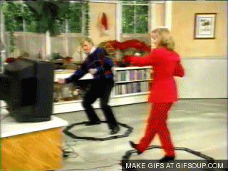
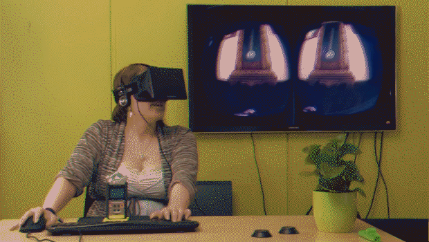
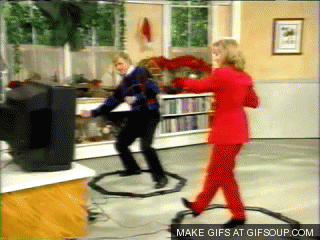
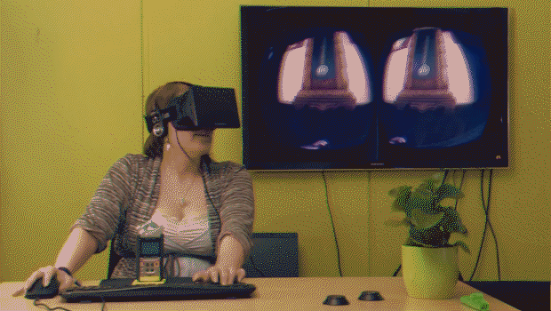
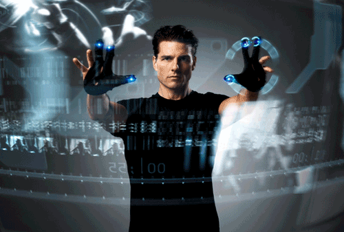

Nuevas posibilidades en el desarrollo de software con sensores naturales
González Martín Adrián
Kapai Harpalani Sawan Jagdish
Martín Molina Sara
Índice
- Introducción.
- Leap Motion.
- Kinect.
- Okulus.
Introduccíon:
- Nuevo paradigma (NUI natural user interface).
- Comunicación entre usuario y máquina simplificada.
 



Leap Motion
Leap Motion
- Dispositivo de entrada innovador.
- SDK para desarrolladores.
Las redes VANETs son un caso particular de las redes ad-hoc m´oviles (MANETs).
Se basa en la idea de generar una red en la que los nodos son veh´ıculos, y que ´esta sea altamente din´amica.
Ejemplo básico en C++
int main(int argc, char** argv) {
Controller controller;
// Keep this process running until Enter is pressed
std::cout << "Press Enter to quit..." << std::endl;
std::cin.get();
return 0;
}
En ocaciones es necesario enviar un mensaje a un veh´ıculo espec´ıfico o a un grupo de ellos. Por ejemplo, si un veh´ıculo de emergencia se est´a aproximando un mensaje se debe de enviar a los veh´ıculos que le rodean, para de esta forma facilitar el camino de este veh´ıculo especial. En este caso un protocolo de enritamiento es nesario para reenviar el mensaje a su destino
Ejemplo básico en C++
int main(int argc, char** argv) {
CListener listener;
Controller controller;
controller.addListener(listener);
// Keep this process running until Enter is pressed
std::cout << "Press Enter to quit..." << std::endl;
std::cin.get();
// Remove the sample listener when done
controller.removeListener(listener);
return 0;
}
Este esquema atiende al env´ıo de mensaje s´olo entre veh´ıculos que tienen algunas caracter´ısticas espec´ıficas para participar en la comunicaci´on. Estas caracter´ısticas pueden ser est´aticas, como los veh´ıculos de una organizaci´on, o din´amicos, como los veh´ıculos de un ´area en un espacio determinado de tiempo. Ver figura 2.3.
Ejemplo básico en C++
class CListener : public Listener {
public:
virtual void onConnect(const Controller&);
virtual void onFrame(const Controller&);
};
void CListener::onConnect(const Controller& controller) {
std::cout << "Connected" << std::endl;
controller.enableGesture(Gesture::TYPE_SWIPE);
}
Los mensajes baliza se env´ıan peri´odicamente al ´area cercana de veh´ıculos. Los datos enviados suelen ser la velocidad actual, la utilizaci´on de frenos u otros datos referentes al remitente del veh´ıculo. Estos mensajes son utilizados para que los veh´ıculos sepan las condiciones de sus vecinos. Estos mensajes s´olo se env´ıan a los veh´ıculos pero estos no los reenv´ıan. Ver figura 2.4.
Ejemplo básico en C++
void CListener::onFrame(const Controller& controller) {
const Frame frame = controller.frame();
std::cout << "Frame id:" << frame.id()
<< ", hands:" << frame.hands().count()
<< ", fingers:" << frame.fingers().count()
<< ", gestures:" << frame.gestures().count() << endl;
}
Estos mensajes se env´an mediante la infraestructura o me- diante veh´ıculos cuando detectan un peligro potencial. Son muy u´tiles para mejorar la seguridad vial. Un ejemplo de este tipo de comunicaci´on es el env´ıo de una aler- ta por la infraestructura, cuando una colisi´on potencial podr´ıa suceder, a todos los veh´ıculos que se aproximen al cruce. Ver figura 2.5.
Ejemplo de Leap Motion.
Microsoft Kinect 2.0
- Gran precisión.
- Mayor resolución.
- Campo de visión 60% más grande
- Reconoce hasta 6 personas
- Más preciso y potente
Cámara time-of-flight (TOF)
Sensor de infrarrojos
Mejoras en el SDK 2.0
- Orientación del cuerpo, manos y uniones mejorada.
- Soporte para Windows Store.
- Soporte para Unity.
- Reconocimiento facial avanzado.
- Soporte multi-app.
Primeros pasos para programar en kinect.
¿Qué necesitamos?
- Visual Studio
- Sensor kinect para windows (o adaptador)
Primeros pasos:
- Instalar el SDK
- Preparar el entorno
Oculus Rift